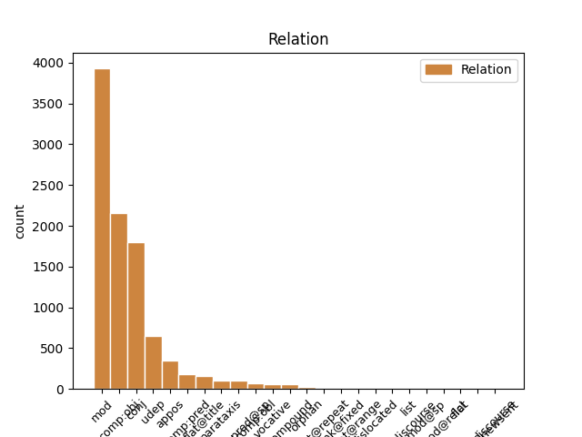
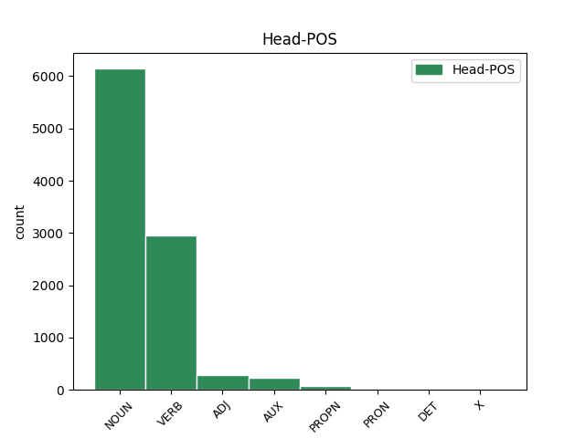
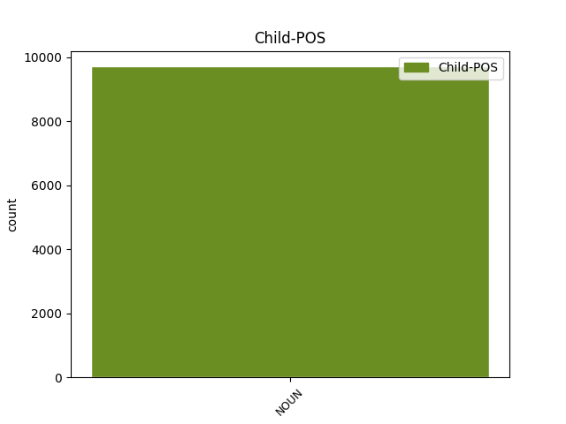

Distribution of features within this leaf



Agreement Rules sorted by frequency.
- When the dependent token is the modifer(mod) of the head token, and the dependent token is NOUN.
1 Під _ _ _ _ 0 _ _ _
2 час _ _ _ _ 0 _ _ _
3 показу _ _ _ _ 0 _ _ _
4 у _ _ _ _ 0 _ _ _
5 США _ _ _ _ 0 _ _ _
6 , _ _ _ _ 0 _ _ _
7 що _ _ _ _ 0 _ _ _
8 розпочався _ _ _ _ 0 _ _ _
9 18 _ _ _ _ 0 _ _ _
10 вересня вересень NOUN Ncmsgn Animacy=Inan|Case=Gen|Gender=Masc|Number=Sing 0 _ _ _
11 2015 _ _ _ _ 0 _ _ _
12 року рік NOUN Ncmsgn Animacy=Inan|Case=Gen|Gender=Masc|Number=Sing 10 mod _ Id=39qx|LTranslit=rik|SpaceAfter=No|Translit=roku
13 , _ _ _ _ 0 _ _ _
14 протягом _ _ _ _ 0 _ _ _
15 першого _ _ _ _ 0 _ _ _
16 тижня _ _ _ _ 0 _ _ _
17 фільм _ _ _ _ 0 _ _ _
18 був _ _ _ _ 0 _ _ _
19 показаний _ _ _ _ 0 _ _ _
20 у _ _ _ _ 0 _ _ _
21 545 _ _ _ _ 0 _ _ _
22 кінотеатрах _ _ _ _ 0 _ _ _
23 і _ _ _ _ 0 _ _ _
24 зібрав _ _ _ _ 0 _ _ _
25 7 222 035 _ _ _ _ 0 _ _ _
26 $ _ _ _ _ 0 _ _ _
27 , _ _ _ _ 0 _ _ _
28 що _ _ _ _ 0 _ _ _
29 на _ _ _ _ 0 _ _ _
30 той _ _ _ _ 0 _ _ _
31 час _ _ _ _ 0 _ _ _
32 дозволило _ _ _ _ 0 _ _ _
33 йому _ _ _ _ 0 _ _ _
34 зайняти _ _ _ _ 0 _ _ _
35 5 _ _ _ _ 0 _ _ _
36 місце _ _ _ _ 0 _ _ _
37 серед _ _ _ _ 0 _ _ _
38 усіх _ _ _ _ 0 _ _ _
39 прем'єр _ _ _ _ 0 _ _ _
40 . _ _ _ _ 0 _ _ _
1 Вона _ _ _ _ 0 _ _ _
2 виявила _ _ _ _ 0 _ _ _
3 готовність _ _ _ _ 0 _ _ _
4 виплатити _ _ _ _ 0 _ _ _
5 за _ _ _ _ 0 _ _ _
6 93%-й _ _ _ _ 0 _ _ _
7 пакет _ _ _ _ 0 _ _ _
8 акцій _ _ _ _ 0 _ _ _
9 « _ _ _ _ 0 _ _ _
10 Криворіжсталі _ _ _ _ 0 _ _ _
11 » _ _ _ _ 0 _ _ _
12 24 _ _ _ _ 0 _ _ _
13 млрд _ _ _ _ 0 _ _ _
14 . _ _ _ _ 0 _ _ _
15 200 _ _ _ _ 0 _ _ _
16 млн _ _ _ _ 0 _ _ _
17 ₴ _ _ _ _ 0 _ _ _
18 . _ _ _ _ 0 _ _ _
19 ( _ _ _ _ 0 _ _ _
20 4 _ _ _ _ 0 _ _ _
21 , _ _ _ _ 0 _ _ _
22 8 _ _ _ _ 0 _ _ _
23 млрд _ _ _ _ 0 _ _ _
24 доларів _ _ _ _ 0 _ _ _
25 США _ _ _ _ 0 _ _ _
26 ) _ _ _ _ 0 _ _ _
27 , _ _ _ _ 0 _ _ _
28 що _ _ _ _ 0 _ _ _
29 в _ _ _ _ 0 _ _ _
30 2 _ _ _ _ 0 _ _ _
31 , _ _ _ _ 0 _ _ _
32 4 _ _ _ _ 0 _ _ _
33 рази _ _ _ _ 0 _ _ _
34 перевищує перевищувати VERB Vmpip3s Aspect=Imp|Mood=Ind|Number=Sing|Person=3|Tense=Pres|VerbForm=Fin 0 _ _ _
35 стартову _ _ _ _ 0 _ _ _
36 ціну _ _ _ _ 0 _ _ _
37 і _ _ _ _ 0 _ _ _
38 в _ _ _ _ 0 _ _ _
39 5 _ _ _ _ 0 _ _ _
40 , _ _ _ _ 0 _ _ _
41 7 _ _ _ _ 0 _ _ _
42 рази _ _ _ _ 0 _ _ _
43 — _ _ _ _ 0 _ _ _
44 суму сума NOUN Ncfsan Animacy=Inan|Case=Acc|Gender=Fem|Number=Sing 34 conj _ Id=39mj|LTranslit=suma|SpaceAfter=No|Translit=sumu
45 , _ _ _ _ 0 _ _ _
46 отриману _ _ _ _ 0 _ _ _
47 за _ _ _ _ 0 _ _ _
48 підприємство _ _ _ _ 0 _ _ _
49 2004 _ _ _ _ 0 _ _ _
50 року _ _ _ _ 0 _ _ _
51 . _ _ _ _ 0 _ _ _
1 Вона _ _ _ _ 0 _ _ _
2 виявила _ _ _ _ 0 _ _ _
3 готовність _ _ _ _ 0 _ _ _
4 виплатити _ _ _ _ 0 _ _ _
5 за _ _ _ _ 0 _ _ _
6 93%-й _ _ _ _ 0 _ _ _
7 пакет _ _ _ _ 0 _ _ _
8 акцій _ _ _ _ 0 _ _ _
9 « _ _ _ _ 0 _ _ _
10 Криворіжсталі _ _ _ _ 0 _ _ _
11 » _ _ _ _ 0 _ _ _
12 24 _ _ _ _ 0 _ _ _
13 млрд _ _ _ _ 0 _ _ _
14 . _ _ _ _ 0 _ _ _
15 200 _ _ _ _ 0 _ _ _
16 млн _ _ _ _ 0 _ _ _
17 ₴ _ _ _ _ 0 _ _ _
18 . _ _ _ _ 0 _ _ _
19 ( _ _ _ _ 0 _ _ _
20 4 _ _ _ _ 0 _ _ _
21 , _ _ _ _ 0 _ _ _
22 8 _ _ _ _ 0 _ _ _
23 млрд _ _ _ _ 0 _ _ _
24 доларів _ _ _ _ 0 _ _ _
25 США _ _ _ _ 0 _ _ _
26 ) _ _ _ _ 0 _ _ _
27 , _ _ _ _ 0 _ _ _
28 що _ _ _ _ 0 _ _ _
29 в _ _ _ _ 0 _ _ _
30 2 _ _ _ _ 0 _ _ _
31 , _ _ _ _ 0 _ _ _
32 4 _ _ _ _ 0 _ _ _
33 рази _ _ _ _ 0 _ _ _
34 перевищує перевищувати VERB Vmpip3s Aspect=Imp|Mood=Ind|Number=Sing|Person=3|Tense=Pres|VerbForm=Fin 0 _ _ _
35 стартову _ _ _ _ 0 _ _ _
36 ціну ціна NOUN Ncfsan Animacy=Inan|Case=Acc|Gender=Fem|Number=Sing 34 comp:obj _ Id=39md|LTranslit=cina|Translit=cinu
37 і _ _ _ _ 0 _ _ _
38 в _ _ _ _ 0 _ _ _
39 5 _ _ _ _ 0 _ _ _
40 , _ _ _ _ 0 _ _ _
41 7 _ _ _ _ 0 _ _ _
42 рази _ _ _ _ 0 _ _ _
43 — _ _ _ _ 0 _ _ _
44 суму _ _ _ _ 0 _ _ _
45 , _ _ _ _ 0 _ _ _
46 отриману _ _ _ _ 0 _ _ _
47 за _ _ _ _ 0 _ _ _
48 підприємство _ _ _ _ 0 _ _ _
49 2004 _ _ _ _ 0 _ _ _
50 року _ _ _ _ 0 _ _ _
51 . _ _ _ _ 0 _ _ _
1 Вона _ _ _ _ 0 _ _ _
2 виявила _ _ _ _ 0 _ _ _
3 готовність _ _ _ _ 0 _ _ _
4 виплатити _ _ _ _ 0 _ _ _
5 за _ _ _ _ 0 _ _ _
6 93%-й _ _ _ _ 0 _ _ _
7 пакет _ _ _ _ 0 _ _ _
8 акцій _ _ _ _ 0 _ _ _
9 « _ _ _ _ 0 _ _ _
10 Криворіжсталі _ _ _ _ 0 _ _ _
11 » _ _ _ _ 0 _ _ _
12 24 _ _ _ _ 0 _ _ _
13 млрд _ _ _ _ 0 _ _ _
14 . _ _ _ _ 0 _ _ _
15 200 _ _ _ _ 0 _ _ _
16 млн _ _ _ _ 0 _ _ _
17 ₴ _ _ _ _ 0 _ _ _
18 . _ _ _ _ 0 _ _ _
19 ( _ _ _ _ 0 _ _ _
20 4 _ _ _ _ 0 _ _ _
21 , _ _ _ _ 0 _ _ _
22 8 _ _ _ _ 0 _ _ _
23 млрд _ _ _ _ 0 _ _ _
24 доларів _ _ _ _ 0 _ _ _
25 США _ _ _ _ 0 _ _ _
26 ) _ _ _ _ 0 _ _ _
27 , _ _ _ _ 0 _ _ _
28 що _ _ _ _ 0 _ _ _
29 в _ _ _ _ 0 _ _ _
30 2 _ _ _ _ 0 _ _ _
31 , _ _ _ _ 0 _ _ _
32 4 _ _ _ _ 0 _ _ _
33 рази _ _ _ _ 0 _ _ _
34 перевищує _ _ _ _ 0 _ _ _
35 стартову _ _ _ _ 0 _ _ _
36 ціну _ _ _ _ 0 _ _ _
37 і _ _ _ _ 0 _ _ _
38 в _ _ _ _ 0 _ _ _
39 5 _ _ _ _ 0 _ _ _
40 , _ _ _ _ 0 _ _ _
41 7 _ _ _ _ 0 _ _ _
42 рази _ _ _ _ 0 _ _ _
43 — _ _ _ _ 0 _ _ _
44 суму _ _ _ _ 0 _ _ _
45 , _ _ _ _ 0 _ _ _
46 отриману отриманий ADJ Ap-fsas-ep Aspect=Perf|Case=Acc|Gender=Fem|Number=Sing|VerbForm=Part|Voice=Pass 0 _ _ _
47 за _ _ _ _ 0 _ _ _
48 підприємство _ _ _ _ 0 _ _ _
49 2004 _ _ _ _ 0 _ _ _
50 року рік NOUN Ncmsgn Animacy=Inan|Case=Gen|Gender=Masc|Number=Sing 46 udep _ Id=39mp|LTranslit=rik|SpaceAfter=No|Translit=roku
51 . _ _ _ _ 0 _ _ _
1 Вона _ _ _ _ 0 _ _ _
2 виявила _ _ _ _ 0 _ _ _
3 готовність _ _ _ _ 0 _ _ _
4 виплатити _ _ _ _ 0 _ _ _
5 за _ _ _ _ 0 _ _ _
6 93%-й _ _ _ _ 0 _ _ _
7 пакет _ _ _ _ 0 _ _ _
8 акцій _ _ _ _ 0 _ _ _
9 « _ _ _ _ 0 _ _ _
10 Криворіжсталі _ _ _ _ 0 _ _ _
11 » _ _ _ _ 0 _ _ _
12 24 _ _ _ _ 0 _ _ _
13 млрд млрд NOUN Y Abbr=Yes|Animacy=Inan|Case=Gen|Gender=Masc|Number=Plur|NumType=Card|Uninflect=Yes 0 _ _ _
14 . _ _ _ _ 0 _ _ _
15 200 _ _ _ _ 0 _ _ _
16 млн _ _ _ _ 0 _ _ _
17 ₴ _ _ _ _ 0 _ _ _
18 . _ _ _ _ 0 _ _ _
19 ( _ _ _ _ 0 _ _ _
20 4 _ _ _ _ 0 _ _ _
21 , _ _ _ _ 0 _ _ _
22 8 _ _ _ _ 0 _ _ _
23 млрд млрд NOUN Y Abbr=Yes|Animacy=Inan|Case=Gen|Gender=Masc|Number=Plur|NumType=Card|Uninflect=Yes 13 appos _ Id=39m2|LTranslit=mlrd|Translit=mlrd
24 доларів _ _ _ _ 0 _ _ _
25 США _ _ _ _ 0 _ _ _
26 ) _ _ _ _ 0 _ _ _
27 , _ _ _ _ 0 _ _ _
28 що _ _ _ _ 0 _ _ _
29 в _ _ _ _ 0 _ _ _
30 2 _ _ _ _ 0 _ _ _
31 , _ _ _ _ 0 _ _ _
32 4 _ _ _ _ 0 _ _ _
33 рази _ _ _ _ 0 _ _ _
34 перевищує _ _ _ _ 0 _ _ _
35 стартову _ _ _ _ 0 _ _ _
36 ціну _ _ _ _ 0 _ _ _
37 і _ _ _ _ 0 _ _ _
38 в _ _ _ _ 0 _ _ _
39 5 _ _ _ _ 0 _ _ _
40 , _ _ _ _ 0 _ _ _
41 7 _ _ _ _ 0 _ _ _
42 рази _ _ _ _ 0 _ _ _
43 — _ _ _ _ 0 _ _ _
44 суму _ _ _ _ 0 _ _ _
45 , _ _ _ _ 0 _ _ _
46 отриману _ _ _ _ 0 _ _ _
47 за _ _ _ _ 0 _ _ _
48 підприємство _ _ _ _ 0 _ _ _
49 2004 _ _ _ _ 0 _ _ _
50 року _ _ _ _ 0 _ _ _
51 . _ _ _ _ 0 _ _ _
1 Але _ _ _ _ 0 _ _ _
2 що _ _ _ _ 0 _ _ _
3 б _ _ _ _ 0 _ _ _
4 ми _ _ _ _ 0 _ _ _
5 собі _ _ _ _ 0 _ _ _
6 не _ _ _ _ 0 _ _ _
7 нафантазували _ _ _ _ 0 _ _ _
8 , _ _ _ _ 0 _ _ _
9 правдою правда NOUN Ncfsin Animacy=Inan|Case=Ins|Gender=Fem|Number=Sing 10 comp:pred _ Id=397t|LTranslit=pravda|Translit=pravdoju
10 буде бути AUX Vapif3s Aspect=Imp|Mood=Ind|Number=Sing|Person=3|Tense=Fut|VerbForm=Fin 0 _ _ _
11 одне _ _ _ _ 0 _ _ _
12 - _ _ _ _ 0 _ _ _
13 відсутність _ _ _ _ 0 _ _ _
14 ресурсів _ _ _ _ 0 _ _ _
15 забрати _ _ _ _ 0 _ _ _
16 з _ _ _ _ 0 _ _ _
17 свого _ _ _ _ 0 _ _ _
18 життя _ _ _ _ 0 _ _ _
19 фактори _ _ _ _ 0 _ _ _
20 , _ _ _ _ 0 _ _ _
21 які _ _ _ _ 0 _ _ _
22 його _ _ _ _ 0 _ _ _
23 отруюють _ _ _ _ 0 _ _ _
24 . _ _ _ _ 0 _ _ _
1 Так _ _ _ _ 0 _ _ _
2 , _ _ _ _ 0 _ _ _
3 20 _ _ _ _ 0 _ _ _
4 вересня _ _ _ _ 0 _ _ _
5 на _ _ _ _ 0 _ _ _
6 сторінці _ _ _ _ 0 _ _ _
7 директора _ _ _ _ 0 _ _ _
8 Національного _ _ _ _ 0 _ _ _
9 комплексу комплекс NOUN Ncmsgn Animacy=Inan|Case=Gen|Gender=Masc|Number=Sing 0 _ _ _
10 " _ _ _ _ 0 _ _ _
11 Експоцентр експоцентр NOUN Ncmsnn Animacy=Inan|Case=Nom|Gender=Masc|Number=Sing 9 flat@title _ Id=390x|LTranslit=ekspocentr|Translit=Ekspocentr
12 України _ _ _ _ 0 _ _ _
13 " _ _ _ _ 0 _ _ _
14 ( _ _ _ _ 0 _ _ _
15 раніше _ _ _ _ 0 _ _ _
16 – _ _ _ _ 0 _ _ _
17 ВДНГ _ _ _ _ 0 _ _ _
18 ) _ _ _ _ 0 _ _ _
19 у _ _ _ _ 0 _ _ _
20 Facebook _ _ _ _ 0 _ _ _
21 з’явилося _ _ _ _ 0 _ _ _
22 повідомлення _ _ _ _ 0 _ _ _
23 про _ _ _ _ 0 _ _ _
24 те _ _ _ _ 0 _ _ _
25 , _ _ _ _ 0 _ _ _
26 що _ _ _ _ 0 _ _ _
27 дельфінарій _ _ _ _ 0 _ _ _
28 " _ _ _ _ 0 _ _ _
29 НЕМО _ _ _ _ 0 _ _ _
30 " _ _ _ _ 0 _ _ _
31 запропонував _ _ _ _ 0 _ _ _
32 звести _ _ _ _ 0 _ _ _
33 нову _ _ _ _ 0 _ _ _
34 конструкцію _ _ _ _ 0 _ _ _
35 на _ _ _ _ 0 _ _ _
36 території _ _ _ _ 0 _ _ _
37 Виставкового _ _ _ _ 0 _ _ _
38 центру _ _ _ _ 0 _ _ _
39 . _ _ _ _ 0 _ _ _
1 Разом _ _ _ _ 0 _ _ _
2 з _ _ _ _ 0 _ _ _
3 хлопцями _ _ _ _ 0 _ _ _
4 вони _ _ _ _ 0 _ _ _
5 патрулюють _ _ _ _ 0 _ _ _
6 і _ _ _ _ 0 _ _ _
7 стали стати VERB Vmeis-p Aspect=Perf|Mood=Ind|Number=Plur|Tense=Past|VerbForm=Fin 0 _ _ _
8 справжніми _ _ _ _ 0 _ _ _
9 бойовими _ _ _ _ 0 _ _ _
10 вепрами вепер NOUN Ncmpiy Animacy=Anim|Case=Ins|Gender=Masc|Number=Plur 7 comp:pred@sp _ Id=33xn|LTranslit=veper|SpaceAfter=No|Translit=vepramy
11 . _ _ _ _ 0 _ _ _
1 Цю _ _ _ _ 0 _ _ _
2 працю _ _ _ _ 0 _ _ _
3 написав написати VERB Vmeis-sm Aspect=Perf|Gender=Masc|Mood=Ind|Number=Sing|Tense=Past|VerbForm=Fin 0 _ _ _
4 д-р _ _ _ _ 0 _ _ _
5 Олег _ _ _ _ 0 _ _ _
6 Кандиба _ _ _ _ 0 _ _ _
7 в _ _ _ _ 0 _ _ _
8 1935 _ _ _ _ 0 _ _ _
9 р _ _ _ _ 0 _ _ _
10 . _ _ _ _ 0 _ _ _
11 декілька _ _ _ _ 0 _ _ _
12 місяців _ _ _ _ 0 _ _ _
13 після _ _ _ _ 0 _ _ _
14 того _ _ _ _ 0 _ _ _
15 , _ _ _ _ 0 _ _ _
16 як _ _ _ _ 0 _ _ _
17 він _ _ _ _ 0 _ _ _
18 брав _ _ _ _ 0 _ _ _
19 участь _ _ _ _ 0 _ _ _
20 у _ _ _ _ 0 _ _ _
21 розкопках _ _ _ _ 0 _ _ _
22 культури _ _ _ _ 0 _ _ _
23 кам’яної _ _ _ _ 0 _ _ _
24 доби _ _ _ _ 0 _ _ _
25 в _ _ _ _ 0 _ _ _
26 Старчево _ _ _ _ 0 _ _ _
27 та _ _ _ _ 0 _ _ _
28 їздив _ _ _ _ 0 _ _ _
29 і _ _ _ _ 0 _ _ _
30 досліджував _ _ _ _ 0 _ _ _
31 подібні _ _ _ _ 0 _ _ _
32 рештки _ _ _ _ 0 _ _ _
33 інших _ _ _ _ 0 _ _ _
34 культур _ _ _ _ 0 _ _ _
35 у _ _ _ _ 0 _ _ _
36 музеях _ _ _ _ 0 _ _ _
37 Румунії _ _ _ _ 0 _ _ _
38 , _ _ _ _ 0 _ _ _
39 Мадярщини _ _ _ _ 0 _ _ _
40 , _ _ _ _ 0 _ _ _
41 Югославії _ _ _ _ 0 _ _ _
42 та _ _ _ _ 0 _ _ _
43 Австрії _ _ _ _ 0 _ _ _
44 ( _ _ _ _ 0 _ _ _
45 1934 _ _ _ _ 0 _ _ _
46 р р. NOUN Y Abbr=Yes|Animacy=Inan|Case=Nom|Gender=Masc|Number=Sing|Uninflect=Yes 3 parataxis _ Id=2uq8|LTranslit=r.|SpaceAfter=No|Translit=r
47 . _ _ _ _ 0 _ _ _
48 ) _ _ _ _ 0 _ _ _
49 . _ _ _ _ 0 _ _ _
1 Це _ _ _ _ 0 _ _ _
2 була _ _ _ _ 0 _ _ _
3 програма _ _ _ _ 0 _ _ _
4 Метрополітен метрополітен NOUN Ncmsnn Animacy=Inan|Case=Nom|Gender=Masc|Number=Sing 6 compound _ Id=33nf|LTranslit=metropoliten|SpaceAfter=No|Translit=Metropoliten
5 - _ _ _ _ 0 _ _ _
6 опери опера NOUN Ncfsgn Animacy=Inan|Case=Gen|Gender=Fem|Number=Sing 0 _ _ _
7 на _ _ _ _ 0 _ _ _
8 сьогоднішній _ _ _ _ 0 _ _ _
9 вечір _ _ _ _ 0 _ _ _
10 , _ _ _ _ 0 _ _ _
11 в _ _ _ _ 0 _ _ _
12 якій _ _ _ _ 0 _ _ _
13 стояло _ _ _ _ 0 _ _ _
14 , _ _ _ _ 0 _ _ _
15 що _ _ _ _ 0 _ _ _
16 нині _ _ _ _ 0 _ _ _
17 відбуватимуться _ _ _ _ 0 _ _ _
18 незвичайно _ _ _ _ 0 _ _ _
19 цікаві _ _ _ _ 0 _ _ _
20 продукції _ _ _ _ 0 _ _ _
21 великого _ _ _ _ 0 _ _ _
22 українського _ _ _ _ 0 _ _ _
23 хору _ _ _ _ 0 _ _ _
24 під _ _ _ _ 0 _ _ _
25 проводом _ _ _ _ 0 _ _ _
26 містера _ _ _ _ 0 _ _ _
27 Кошиця _ _ _ _ 0 _ _ _
28 . _ _ _ _ 0 _ _ _
1 Ти _ _ _ _ 0 _ _ _
2 справедливо _ _ _ _ 0 _ _ _
3 скажеш _ _ _ _ 0 _ _ _
4 на _ _ _ _ 0 _ _ _
5 це _ _ _ _ 0 _ _ _
6 : _ _ _ _ 0 _ _ _
7 одна _ _ _ _ 0 _ _ _
8 ластівка _ _ _ _ 0 _ _ _
9 ще _ _ _ _ 0 _ _ _
10 не _ _ _ _ 0 _ _ _
11 робить _ _ _ _ 0 _ _ _
12 весни _ _ _ _ 0 _ _ _
13 ; _ _ _ _ 0 _ _ _
14 але _ _ _ _ 0 _ _ _
15 ж _ _ _ _ 0 _ _ _
16 з _ _ _ _ 0 _ _ _
17 свого _ _ _ _ 0 _ _ _
18 боку _ _ _ _ 0 _ _ _
19 ми _ _ _ _ 0 _ _ _
20 теж _ _ _ _ 0 _ _ _
21 справедливо _ _ _ _ 0 _ _ _
22 відзначимо _ _ _ _ 0 _ _ _
23 , _ _ _ _ 0 _ _ _
24 що _ _ _ _ 0 _ _ _
25 : _ _ _ _ 0 _ _ _
26 хіба _ _ _ _ 0 _ _ _
27 це _ _ _ _ 0 _ _ _
28 не _ _ _ _ 0 _ _ _
29 ти _ _ _ _ 0 _ _ _
30 , _ _ _ _ 0 _ _ _
31 друже друг NOUN Ncmsvy Animacy=Anim|Case=Voc|Gender=Masc|Number=Sing 36 vocative _ Id=2vd3|LTranslit=druh|SpaceAfter=No|Translit=druže
32 , _ _ _ _ 0 _ _ _
33 з _ _ _ _ 0 _ _ _
34 таким _ _ _ _ 0 _ _ _
35 захопленням _ _ _ _ 0 _ _ _
36 біг бігти VERB Vmpis-sm Aspect=Imp|Gender=Masc|Mood=Ind|Number=Sing|Tense=Past|VerbForm=Fin 0 _ _ _
37 до _ _ _ _ 0 _ _ _
38 театру _ _ _ _ 0 _ _ _
39 , _ _ _ _ 0 _ _ _
40 де _ _ _ _ 0 _ _ _
41 йдуть _ _ _ _ 0 _ _ _
42 — _ _ _ _ 0 _ _ _
43 " _ _ _ _ 0 _ _ _
44 97 _ _ _ _ 0 _ _ _
45 " _ _ _ _ 0 _ _ _
46 , _ _ _ _ 0 _ _ _
47 " _ _ _ _ 0 _ _ _
48 Любов _ _ _ _ 0 _ _ _
49 і _ _ _ _ 0 _ _ _
50 дим _ _ _ _ 0 _ _ _
51 " _ _ _ _ 0 _ _ _
52 , _ _ _ _ 0 _ _ _
53 " _ _ _ _ 0 _ _ _
54 Яблуневий _ _ _ _ 0 _ _ _
55 полон _ _ _ _ 0 _ _ _
56 " _ _ _ _ 0 _ _ _
57 , _ _ _ _ 0 _ _ _
58 " _ _ _ _ 0 _ _ _
59 Комуна _ _ _ _ 0 _ _ _
60 в _ _ _ _ 0 _ _ _
61 степах _ _ _ _ 0 _ _ _
62 " _ _ _ _ 0 _ _ _
63 — _ _ _ _ 0 _ _ _
64 одним _ _ _ _ 0 _ _ _
65 словом _ _ _ _ 0 _ _ _
66 , _ _ _ _ 0 _ _ _
67 хіба _ _ _ _ 0 _ _ _
68 своїми _ _ _ _ 0 _ _ _
69 оплесками _ _ _ _ 0 _ _ _
70 ти _ _ _ _ 0 _ _ _
71 не _ _ _ _ 0 _ _ _
72 вітаєш _ _ _ _ 0 _ _ _
73 т _ _ _ _ 0 _ _ _
74 . _ _ _ _ 0 _ _ _
75 т _ _ _ _ 0 _ _ _
76 . _ _ _ _ 0 _ _ _
77 М _ _ _ _ 0 _ _ _
78 . _ _ _ _ 0 _ _ _
79 Куліша _ _ _ _ 0 _ _ _
80 і _ _ _ _ 0 _ _ _
81 І _ _ _ _ 0 _ _ _
82 . _ _ _ _ 0 _ _ _
83 Дніпровського _ _ _ _ 0 _ _ _
84 , _ _ _ _ 0 _ _ _
85 що _ _ _ _ 0 _ _ _
86 є _ _ _ _ 0 _ _ _
87 членами _ _ _ _ 0 _ _ _
88 Вапліте _ _ _ _ 0 _ _ _
89 ? _ _ _ _ 0 _ _ _
1 Потім _ _ _ _ 0 _ _ _
2 мр _ _ _ _ 0 _ _ _
3 . _ _ _ _ 0 _ _ _
4 Морріс _ _ _ _ 0 _ _ _
5 крикнув крикнути VERB Vmeis-sm Aspect=Perf|Gender=Masc|Mood=Ind|Number=Sing|Tense=Past|VerbForm=Fin 0 _ _ _
6 до _ _ _ _ 0 _ _ _
7 вуха _ _ _ _ 0 _ _ _
8 мр мр. NOUN Y Abbr=Yes|Animacy=Anim|Case=Dat|Gender=Masc|Number=Sing|Uninflect=Yes 5 comp:obl _ Id=33gw|LTranslit=mr.|SpaceAfter=No|Translit=mr
9 . _ _ _ _ 0 _ _ _
10 Кетлінгові _ _ _ _ 0 _ _ _
11 , _ _ _ _ 0 _ _ _
12 що _ _ _ _ 0 _ _ _
13 сьогодні _ _ _ _ 0 _ _ _
14 , _ _ _ _ 0 _ _ _
15 вночі _ _ _ _ 0 _ _ _
16 , _ _ _ _ 0 _ _ _
17 мабуть _ _ _ _ 0 _ _ _
18 , _ _ _ _ 0 _ _ _
19 схоче _ _ _ _ 0 _ _ _
20 падати _ _ _ _ 0 _ _ _
21 дощ _ _ _ _ 0 _ _ _
22 , _ _ _ _ 0 _ _ _
23 на _ _ _ _ 0 _ _ _
24 що _ _ _ _ 0 _ _ _
25 мр _ _ _ _ 0 _ _ _
26 . _ _ _ _ 0 _ _ _
27 Кетлінг _ _ _ _ 0 _ _ _
28 , _ _ _ _ 0 _ _ _
29 позіхнувши _ _ _ _ 0 _ _ _
30 , _ _ _ _ 0 _ _ _
31 відповів _ _ _ _ 0 _ _ _
32 , _ _ _ _ 0 _ _ _
33 що _ _ _ _ 0 _ _ _
34 він _ _ _ _ 0 _ _ _
35 вчора _ _ _ _ 0 _ _ _
36 програв _ _ _ _ 0 _ _ _
37 на _ _ _ _ 0 _ _ _
38 Уолл _ _ _ _ 0 _ _ _
39 - _ _ _ _ 0 _ _ _
40 стріті _ _ _ _ 0 _ _ _
41 тисячу _ _ _ _ 0 _ _ _
42 п'ятсот _ _ _ _ 0 _ _ _
43 доларів _ _ _ _ 0 _ _ _
44 . _ _ _ _ 0 _ _ _
1 Мр _ _ _ _ 0 _ _ _
2 . _ _ _ _ 0 _ _ _
3 Морріс _ _ _ _ 0 _ _ _
4 — _ _ _ _ 0 _ _ _
5 № _ _ _ _ 0 _ _ _
6 847 _ _ _ _ 0 _ _ _
7 , _ _ _ _ 0 _ _ _
8 а _ _ _ _ 0 _ _ _
9 мр мр. NOUN Y Abbr=Yes|Animacy=Anim|Case=Nom|Gender=Masc|Number=Sing|Uninflect=Yes 0 _ _ _
10 . _ _ _ _ 0 _ _ _
11 Кетлінг _ _ _ _ 0 _ _ _
12 — _ _ _ _ 0 _ _ _
13 № № NOUN Ncmsan Animacy=Inan|Case=Acc|Gender=Masc|Number=Sing|Uninflect=Yes 9 orphan _ Id=33qr|LTranslit=№|Translit=№
14 848 _ _ _ _ 0 _ _ _
15 . _ _ _ _ 0 _ _ _
1 Ти _ _ _ _ 0 _ _ _
2 справедливо _ _ _ _ 0 _ _ _
3 скажеш _ _ _ _ 0 _ _ _
4 на _ _ _ _ 0 _ _ _
5 це _ _ _ _ 0 _ _ _
6 : _ _ _ _ 0 _ _ _
7 одна _ _ _ _ 0 _ _ _
8 ластівка _ _ _ _ 0 _ _ _
9 ще _ _ _ _ 0 _ _ _
10 не _ _ _ _ 0 _ _ _
11 робить _ _ _ _ 0 _ _ _
12 весни _ _ _ _ 0 _ _ _
13 ; _ _ _ _ 0 _ _ _
14 але _ _ _ _ 0 _ _ _
15 ж _ _ _ _ 0 _ _ _
16 з _ _ _ _ 0 _ _ _
17 свого _ _ _ _ 0 _ _ _
18 боку _ _ _ _ 0 _ _ _
19 ми _ _ _ _ 0 _ _ _
20 теж _ _ _ _ 0 _ _ _
21 справедливо _ _ _ _ 0 _ _ _
22 відзначимо _ _ _ _ 0 _ _ _
23 , _ _ _ _ 0 _ _ _
24 що _ _ _ _ 0 _ _ _
25 : _ _ _ _ 0 _ _ _
26 хіба _ _ _ _ 0 _ _ _
27 це _ _ _ _ 0 _ _ _
28 не _ _ _ _ 0 _ _ _
29 ти _ _ _ _ 0 _ _ _
30 , _ _ _ _ 0 _ _ _
31 друже _ _ _ _ 0 _ _ _
32 , _ _ _ _ 0 _ _ _
33 з _ _ _ _ 0 _ _ _
34 таким _ _ _ _ 0 _ _ _
35 захопленням _ _ _ _ 0 _ _ _
36 біг _ _ _ _ 0 _ _ _
37 до _ _ _ _ 0 _ _ _
38 театру _ _ _ _ 0 _ _ _
39 , _ _ _ _ 0 _ _ _
40 де _ _ _ _ 0 _ _ _
41 йдуть _ _ _ _ 0 _ _ _
42 — _ _ _ _ 0 _ _ _
43 " _ _ _ _ 0 _ _ _
44 97 _ _ _ _ 0 _ _ _
45 " _ _ _ _ 0 _ _ _
46 , _ _ _ _ 0 _ _ _
47 " _ _ _ _ 0 _ _ _
48 Любов _ _ _ _ 0 _ _ _
49 і _ _ _ _ 0 _ _ _
50 дим _ _ _ _ 0 _ _ _
51 " _ _ _ _ 0 _ _ _
52 , _ _ _ _ 0 _ _ _
53 " _ _ _ _ 0 _ _ _
54 Яблуневий _ _ _ _ 0 _ _ _
55 полон _ _ _ _ 0 _ _ _
56 " _ _ _ _ 0 _ _ _
57 , _ _ _ _ 0 _ _ _
58 " _ _ _ _ 0 _ _ _
59 Комуна _ _ _ _ 0 _ _ _
60 в _ _ _ _ 0 _ _ _
61 степах _ _ _ _ 0 _ _ _
62 " _ _ _ _ 0 _ _ _
63 — _ _ _ _ 0 _ _ _
64 одним _ _ _ _ 0 _ _ _
65 словом _ _ _ _ 0 _ _ _
66 , _ _ _ _ 0 _ _ _
67 хіба _ _ _ _ 0 _ _ _
68 своїми _ _ _ _ 0 _ _ _
69 оплесками _ _ _ _ 0 _ _ _
70 ти _ _ _ _ 0 _ _ _
71 не _ _ _ _ 0 _ _ _
72 вітаєш _ _ _ _ 0 _ _ _
73 т т. NOUN Y Abbr=Yes|Animacy=Anim|Case=Acc|Gender=Masc|Number=Sing|Uninflect=Yes 0 _ _ _
74 . _ _ _ _ 0 _ _ _
75 т т. NOUN Y Abbr=Yes|Animacy=Anim|Case=Acc|Gender=Masc|Number=Sing|Uninflect=Yes 73 flat@repeat _ Id=2veb|LTranslit=t.|SpaceAfter=No|Translit=t
76 . _ _ _ _ 0 _ _ _
77 М _ _ _ _ 0 _ _ _
78 . _ _ _ _ 0 _ _ _
79 Куліша _ _ _ _ 0 _ _ _
80 і _ _ _ _ 0 _ _ _
81 І _ _ _ _ 0 _ _ _
82 . _ _ _ _ 0 _ _ _
83 Дніпровського _ _ _ _ 0 _ _ _
84 , _ _ _ _ 0 _ _ _
85 що _ _ _ _ 0 _ _ _
86 є _ _ _ _ 0 _ _ _
87 членами _ _ _ _ 0 _ _ _
88 Вапліте _ _ _ _ 0 _ _ _
89 ? _ _ _ _ 0 _ _ _
1 Не _ _ _ _ 0 _ _ _
2 підкажете _ _ _ _ 0 _ _ _
3 , _ _ _ _ 0 _ _ _
4 будь бути VERB Vapm-2s Aspect=Imp|Mood=Imp|Number=Sing|Person=2|VerbForm=Fin 0 _ _ _
5 ласка ласка NOUN Ncfsnn Animacy=Inan|Case=Nom|Gender=Fem|Number=Sing 4 unk@fixed _ Id=1tf1|LTranslit=laska|SpaceAfter=No|Translit=laska
6 , _ _ _ _ 0 _ _ _
7 як _ _ _ _ 0 _ _ _
8 скоро _ _ _ _ 0 _ _ _
9 з`являться _ _ _ _ 0 _ _ _
10 нові _ _ _ _ 0 _ _ _
11 примірники _ _ _ _ 0 _ _ _
12 ? _ _ _ _ 0 _ _ _
1 Наприкінці _ _ _ _ 0 _ _ _
2 XVIII XVIII ADJ Mlonsg Case=Gen|Gender=Neut|Number=Sing|NumType=Ord|Uninflect=Yes 0 _ _ _
3 — _ _ _ _ 0 _ _ _
4 початку початок NOUN Ncmsln Animacy=Inan|Case=Loc|Gender=Masc|Number=Sing 2 flat@range _ Id=2qi5|LTranslit=počatok|Translit=počatku
5 XIX _ _ _ _ 0 _ _ _
6 ст _ _ _ _ 0 _ _ _
7 . _ _ _ _ 0 _ _ _
8 купання _ _ _ _ 0 _ _ _
9 в _ _ _ _ 0 _ _ _
10 водоймах _ _ _ _ 0 _ _ _
11 стало _ _ _ _ 0 _ _ _
12 колективним _ _ _ _ 0 _ _ _
13 , _ _ _ _ 0 _ _ _
14 але _ _ _ _ 0 _ _ _
15 жінки _ _ _ _ 0 _ _ _
16 купалися _ _ _ _ 0 _ _ _
17 тільки _ _ _ _ 0 _ _ _
18 на _ _ _ _ 0 _ _ _
19 березі _ _ _ _ 0 _ _ _
20 , _ _ _ _ 0 _ _ _
21 тому _ _ _ _ 0 _ _ _
22 що _ _ _ _ 0 _ _ _
23 , _ _ _ _ 0 _ _ _
24 одяг _ _ _ _ 0 _ _ _
25 який _ _ _ _ 0 _ _ _
26 вони _ _ _ _ 0 _ _ _
27 носили _ _ _ _ 0 _ _ _
28 , _ _ _ _ 0 _ _ _
29 не _ _ _ _ 0 _ _ _
30 був _ _ _ _ 0 _ _ _
31 пристосований _ _ _ _ 0 _ _ _
32 для _ _ _ _ 0 _ _ _
33 купання _ _ _ _ 0 _ _ _
34 . _ _ _ _ 0 _ _ _
1 тепер _ _ _ _ 0 _ _ _
2 сиджу _ _ _ _ 0 _ _ _
3 , _ _ _ _ 0 _ _ _
4 думаю _ _ _ _ 0 _ _ _
5 , _ _ _ _ 0 _ _ _
6 як _ _ _ _ 0 _ _ _
7 він _ _ _ _ 0 _ _ _
8 виглядає виглядати VERB Vmpip3s Aspect=Imp|Mood=Ind|Number=Sing|Person=3|Tense=Pres|VerbForm=Fin 0 _ _ _
9 , _ _ _ _ 0 _ _ _
10 цей _ _ _ _ 0 _ _ _
11 паспорт паспорт NOUN Ncmsnn Animacy=Inan|Case=Nom|Gender=Masc|Number=Sing 8 dislocated _ Id=2pan|LTranslit=pasport|SpaceAfter=No|Translit=pasport
12 ? _ _ _ _ 0 _ _ _
1 Ти _ _ _ _ 0 _ _ _
2 справедливо _ _ _ _ 0 _ _ _
3 скажеш _ _ _ _ 0 _ _ _
4 на _ _ _ _ 0 _ _ _
5 це _ _ _ _ 0 _ _ _
6 : _ _ _ _ 0 _ _ _
7 одна _ _ _ _ 0 _ _ _
8 ластівка _ _ _ _ 0 _ _ _
9 ще _ _ _ _ 0 _ _ _
10 не _ _ _ _ 0 _ _ _
11 робить _ _ _ _ 0 _ _ _
12 весни _ _ _ _ 0 _ _ _
13 ; _ _ _ _ 0 _ _ _
14 але _ _ _ _ 0 _ _ _
15 ж _ _ _ _ 0 _ _ _
16 з _ _ _ _ 0 _ _ _
17 свого _ _ _ _ 0 _ _ _
18 боку _ _ _ _ 0 _ _ _
19 ми _ _ _ _ 0 _ _ _
20 теж _ _ _ _ 0 _ _ _
21 справедливо _ _ _ _ 0 _ _ _
22 відзначимо _ _ _ _ 0 _ _ _
23 , _ _ _ _ 0 _ _ _
24 що _ _ _ _ 0 _ _ _
25 : _ _ _ _ 0 _ _ _
26 хіба _ _ _ _ 0 _ _ _
27 це _ _ _ _ 0 _ _ _
28 не _ _ _ _ 0 _ _ _
29 ти _ _ _ _ 0 _ _ _
30 , _ _ _ _ 0 _ _ _
31 друже _ _ _ _ 0 _ _ _
32 , _ _ _ _ 0 _ _ _
33 з _ _ _ _ 0 _ _ _
34 таким _ _ _ _ 0 _ _ _
35 захопленням _ _ _ _ 0 _ _ _
36 біг _ _ _ _ 0 _ _ _
37 до _ _ _ _ 0 _ _ _
38 театру _ _ _ _ 0 _ _ _
39 , _ _ _ _ 0 _ _ _
40 де _ _ _ _ 0 _ _ _
41 йдуть _ _ _ _ 0 _ _ _
42 — _ _ _ _ 0 _ _ _
43 " _ _ _ _ 0 _ _ _
44 97 _ _ _ _ 0 _ _ _
45 " _ _ _ _ 0 _ _ _
46 , _ _ _ _ 0 _ _ _
47 " _ _ _ _ 0 _ _ _
48 Любов _ _ _ _ 0 _ _ _
49 і _ _ _ _ 0 _ _ _
50 дим _ _ _ _ 0 _ _ _
51 " _ _ _ _ 0 _ _ _
52 , _ _ _ _ 0 _ _ _
53 " _ _ _ _ 0 _ _ _
54 Яблуневий _ _ _ _ 0 _ _ _
55 полон _ _ _ _ 0 _ _ _
56 " _ _ _ _ 0 _ _ _
57 , _ _ _ _ 0 _ _ _
58 " _ _ _ _ 0 _ _ _
59 Комуна _ _ _ _ 0 _ _ _
60 в _ _ _ _ 0 _ _ _
61 степах _ _ _ _ 0 _ _ _
62 " _ _ _ _ 0 _ _ _
63 — _ _ _ _ 0 _ _ _
64 одним _ _ _ _ 0 _ _ _
65 словом слово NOUN Ncnsin Animacy=Inan|Case=Ins|Gender=Neut|Number=Sing 72 parataxis@discourse _ Id=2ve1|LTranslit=slovo|SpaceAfter=No|Translit=slovom
66 , _ _ _ _ 0 _ _ _
67 хіба _ _ _ _ 0 _ _ _
68 своїми _ _ _ _ 0 _ _ _
69 оплесками _ _ _ _ 0 _ _ _
70 ти _ _ _ _ 0 _ _ _
71 не _ _ _ _ 0 _ _ _
72 вітаєш вітати VERB Vmpip2s Aspect=Imp|Mood=Ind|Number=Sing|Person=2|Tense=Pres|VerbForm=Fin 0 _ _ _
73 т _ _ _ _ 0 _ _ _
74 . _ _ _ _ 0 _ _ _
75 т _ _ _ _ 0 _ _ _
76 . _ _ _ _ 0 _ _ _
77 М _ _ _ _ 0 _ _ _
78 . _ _ _ _ 0 _ _ _
79 Куліша _ _ _ _ 0 _ _ _
80 і _ _ _ _ 0 _ _ _
81 І _ _ _ _ 0 _ _ _
82 . _ _ _ _ 0 _ _ _
83 Дніпровського _ _ _ _ 0 _ _ _
84 , _ _ _ _ 0 _ _ _
85 що _ _ _ _ 0 _ _ _
86 є _ _ _ _ 0 _ _ _
87 членами _ _ _ _ 0 _ _ _
88 Вапліте _ _ _ _ 0 _ _ _
89 ? _ _ _ _ 0 _ _ _
1 7 _ _ _ _ 0 _ _ _
2 вересня _ _ _ _ 0 _ _ _
3 « _ _ _ _ 0 _ _ _
4 ТЕЛЬНЮК _ _ _ _ 0 _ _ _
5 : _ _ _ _ 0 _ _ _
6 Сестри _ _ _ _ 0 _ _ _
7 » _ _ _ _ 0 _ _ _
8 виступлять _ _ _ _ 0 _ _ _
9 на _ _ _ _ 0 _ _ _
10 території _ _ _ _ 0 _ _ _
11 « _ _ _ _ 0 _ _ _
12 Софії _ _ _ _ 0 _ _ _
13 Київської _ _ _ _ 0 _ _ _
14 » _ _ _ _ 0 _ _ _
15 [ _ _ _ _ 0 _ _ _
16 Київ Київ PROPN Npmsnn Animacy=Inan|Case=Nom|Gender=Masc|Number=Sing 0 _ _ _
17 , _ _ _ _ 0 _ _ _
18 вул вул. NOUN Y Abbr=Yes|Animacy=Inan|Case=Nom|Gender=Fem|Number=Sing|Uninflect=Yes 16 list _ Id=2uw8|LTranslit=vul.|SpaceAfter=No|Translit=vul
19 . _ _ _ _ 0 _ _ _
20 Володимирська _ _ _ _ 0 _ _ _
21 , _ _ _ _ 0 _ _ _
22 24 _ _ _ _ 0 _ _ _
23 ] _ _ _ _ 0 _ _ _
24 за _ _ _ _ 0 _ _ _
25 участю _ _ _ _ 0 _ _ _
26 Симфонічного _ _ _ _ 0 _ _ _
27 оркестру _ _ _ _ 0 _ _ _
28 та _ _ _ _ 0 _ _ _
29 хору _ _ _ _ 0 _ _ _
30 Заслуженого _ _ _ _ 0 _ _ _
31 академічного _ _ _ _ 0 _ _ _
32 ансамблю _ _ _ _ 0 _ _ _
33 пісні _ _ _ _ 0 _ _ _
34 і _ _ _ _ 0 _ _ _
35 танцю _ _ _ _ 0 _ _ _
36 Збройних _ _ _ _ 0 _ _ _
37 Сил _ _ _ _ 0 _ _ _
38 України _ _ _ _ 0 _ _ _
1 Цього _ _ _ _ 0 _ _ _
2 року _ _ _ _ 0 _ _ _
3 вона _ _ _ _ 0 _ _ _
4 здасть _ _ _ _ 0 _ _ _
5 останнього _ _ _ _ 0 _ _ _
6 екзамена _ _ _ _ 0 _ _ _
7 і _ _ _ _ 0 _ _ _
8 вийде вийти VERB Vmeif3s Aspect=Perf|Mood=Ind|Number=Sing|Person=3|Tense=Fut|VerbForm=Fin 0 _ _ _
9 з _ _ _ _ 0 _ _ _
10 школи _ _ _ _ 0 _ _ _
11 розумною _ _ _ _ 0 _ _ _
12 , _ _ _ _ 0 _ _ _
13 правдивою _ _ _ _ 0 _ _ _
14 і _ _ _ _ 0 _ _ _
15 чесною _ _ _ _ 0 _ _ _
16 дівчиною дівчина NOUN Ncfsiy Animacy=Anim|Case=Ins|Gender=Fem|Number=Sing 8 mod@sp _ Id=33en|LTranslit=divčyna|SpaceAfter=No|Translit=divčynoju
17 . _ _ _ _ 0 _ _ _
1 У _ _ _ _ 0 _ _ _
2 1959 _ _ _ _ 0 _ _ _
3 році рік NOUN Ncmsln Animacy=Inan|Case=Loc|Gender=Masc|Number=Sing 0 _ _ _
4 , _ _ _ _ 0 _ _ _
5 коли _ _ _ _ 0 _ _ _
6 Лі _ _ _ _ 0 _ _ _
7 Куан _ _ _ _ 0 _ _ _
8 Ю _ _ _ _ 0 _ _ _
9 вперше _ _ _ _ 0 _ _ _
10 став став NOUN Ncmsnn Animacy=Inan|Case=Nom|Gender=Masc|Number=Sing 3 mod@relcl _ Id=2lzw|LTranslit=stav|Translit=stav
11 прем'єр _ _ _ _ 0 _ _ _
12 - _ _ _ _ 0 _ _ _
13 міністром _ _ _ _ 0 _ _ _
14 , _ _ _ _ 0 _ _ _
15 ВВП _ _ _ _ 0 _ _ _
16 на _ _ _ _ 0 _ _ _
17 душу _ _ _ _ 0 _ _ _
18 населення _ _ _ _ 0 _ _ _
19 в _ _ _ _ 0 _ _ _
20 країні _ _ _ _ 0 _ _ _
21 становив _ _ _ _ 0 _ _ _
22 усього _ _ _ _ 0 _ _ _
23 400 _ _ _ _ 0 _ _ _
24 дол _ _ _ _ 0 _ _ _
25 . _ _ _ _ 0 _ _ _
26 США _ _ _ _ 0 _ _ _
27 . _ _ _ _ 0 _ _ _
1 Вона _ _ _ _ 0 _ _ _
2 виявила _ _ _ _ 0 _ _ _
3 готовність _ _ _ _ 0 _ _ _
4 виплатити _ _ _ _ 0 _ _ _
5 за _ _ _ _ 0 _ _ _
6 93%-й _ _ _ _ 0 _ _ _
7 пакет _ _ _ _ 0 _ _ _
8 акцій _ _ _ _ 0 _ _ _
9 « _ _ _ _ 0 _ _ _
10 Криворіжсталі _ _ _ _ 0 _ _ _
11 » _ _ _ _ 0 _ _ _
12 24 _ _ _ _ 0 _ _ _
13 млрд млрд NOUN Y Abbr=Yes|Animacy=Inan|Case=Gen|Gender=Masc|Number=Plur|NumType=Card|Uninflect=Yes 0 _ _ _
14 . _ _ _ _ 0 _ _ _
15 200 _ _ _ _ 0 _ _ _
16 млн млн NOUN Y Abbr=Yes|Animacy=Inan|Case=Gen|Gender=Masc|Number=Plur|NumType=Card|Uninflect=Yes 13 flat _ Id=39lv|LTranslit=mln|Translit=mln
17 ₴ _ _ _ _ 0 _ _ _
18 . _ _ _ _ 0 _ _ _
19 ( _ _ _ _ 0 _ _ _
20 4 _ _ _ _ 0 _ _ _
21 , _ _ _ _ 0 _ _ _
22 8 _ _ _ _ 0 _ _ _
23 млрд _ _ _ _ 0 _ _ _
24 доларів _ _ _ _ 0 _ _ _
25 США _ _ _ _ 0 _ _ _
26 ) _ _ _ _ 0 _ _ _
27 , _ _ _ _ 0 _ _ _
28 що _ _ _ _ 0 _ _ _
29 в _ _ _ _ 0 _ _ _
30 2 _ _ _ _ 0 _ _ _
31 , _ _ _ _ 0 _ _ _
32 4 _ _ _ _ 0 _ _ _
33 рази _ _ _ _ 0 _ _ _
34 перевищує _ _ _ _ 0 _ _ _
35 стартову _ _ _ _ 0 _ _ _
36 ціну _ _ _ _ 0 _ _ _
37 і _ _ _ _ 0 _ _ _
38 в _ _ _ _ 0 _ _ _
39 5 _ _ _ _ 0 _ _ _
40 , _ _ _ _ 0 _ _ _
41 7 _ _ _ _ 0 _ _ _
42 рази _ _ _ _ 0 _ _ _
43 — _ _ _ _ 0 _ _ _
44 суму _ _ _ _ 0 _ _ _
45 , _ _ _ _ 0 _ _ _
46 отриману _ _ _ _ 0 _ _ _
47 за _ _ _ _ 0 _ _ _
48 підприємство _ _ _ _ 0 _ _ _
49 2004 _ _ _ _ 0 _ _ _
50 року _ _ _ _ 0 _ _ _
51 . _ _ _ _ 0 _ _ _
1 Що _ _ _ _ 0 _ _ _
2 , _ _ _ _ 0 _ _ _
3 наприклад _ _ _ _ 0 _ _ _
4 , _ _ _ _ 0 _ _ _
5 мила _ _ _ _ 0 _ _ _
6 й _ _ _ _ 0 _ _ _
7 безпосередня _ _ _ _ 0 _ _ _
8 журналістка _ _ _ _ 0 _ _ _
9 , _ _ _ _ 0 _ _ _
10 яка _ _ _ _ 0 _ _ _
11 під _ _ _ _ 0 _ _ _
12 час _ _ _ _ 0 _ _ _
13 Майдану _ _ _ _ 0 _ _ _
14 була _ _ _ _ 0 _ _ _
15 ляпнула _ _ _ _ 0 _ _ _
16 мені _ _ _ _ 0 _ _ _
17 в _ _ _ _ 0 _ _ _
18 ефірі _ _ _ _ 0 _ _ _
19 " _ _ _ _ 0 _ _ _
20 Громадського _ _ _ _ 0 _ _ _
21 " _ _ _ _ 0 _ _ _
22 : _ _ _ _ 0 _ _ _
23 " _ _ _ _ 0 _ _ _
24 Шевельов Шевельов PROPN Npmsny Animacy=Anim|Case=Nom|Gender=Masc|NameType=Sur|Number=Sing 0 _ _ _
25 ? _ _ _ _ 0 _ _ _
26 Так _ _ _ _ 0 _ _ _
27 він _ _ _ _ 0 _ _ _
28 же _ _ _ _ 0 _ _ _
29 нацистський _ _ _ _ 0 _ _ _
30 колаборант колаборант NOUN Ncmsny Animacy=Anim|Case=Nom|Gender=Masc|Number=Sing 24 parataxis@newsent _ Id=2b60|LTranslit=kolaborant|SpaceAfter=No|Translit=kolaborant
31 ! _ _ _ _ 0 _ _ _
32 " _ _ _ _ 0 _ _ _
33 , _ _ _ _ 0 _ _ _
34 - _ _ _ _ 0 _ _ _
35 не _ _ _ _ 0 _ _ _
36 " _ _ _ _ 0 _ _ _
37 темник _ _ _ _ 0 _ _ _
38 " _ _ _ _ 0 _ _ _
39 від _ _ _ _ 0 _ _ _
40 ФСБ _ _ _ _ 0 _ _ _
41 слідом _ _ _ _ 0 _ _ _
42 за _ _ _ _ 0 _ _ _
43 Добкіним _ _ _ _ 0 _ _ _
44 озвучувала _ _ _ _ 0 _ _ _
45 , _ _ _ _ 0 _ _ _
46 а _ _ _ _ 0 _ _ _
47 просто _ _ _ _ 0 _ _ _
48 " _ _ _ _ 0 _ _ _
49 на _ _ _ _ 0 _ _ _
50 автоматі _ _ _ _ 0 _ _ _
51 " _ _ _ _ 0 _ _ _
52 , _ _ _ _ 0 _ _ _
53 як _ _ _ _ 0 _ _ _
54 німфа _ _ _ _ 0 _ _ _
55 Ехо _ _ _ _ 0 _ _ _
56 , _ _ _ _ 0 _ _ _
57 повторила _ _ _ _ 0 _ _ _
58 те _ _ _ _ 0 _ _ _
59 , _ _ _ _ 0 _ _ _
60 що _ _ _ _ 0 _ _ _
61 найголосніше _ _ _ _ 0 _ _ _
62 в _ _ _ _ 0 _ _ _
63 ефірах _ _ _ _ 0 _ _ _
64 про _ _ _ _ 0 _ _ _
65 Шевельова _ _ _ _ 0 _ _ _
66 звучало _ _ _ _ 0 _ _ _
67 ( _ _ _ _ 0 _ _ _
68 чула _ _ _ _ 0 _ _ _
69 дзвін _ _ _ _ 0 _ _ _
70 ! _ _ _ _ 0 _ _ _
71 ) _ _ _ _ 0 _ _ _
72 . _ _ _ _ 0 _ _ _
Disagree Examples:
1 Якось _ _ _ _ 0 _ _ _
2 зібралися _ _ _ _ 0 _ _ _
3 у _ _ _ _ 0 _ _ _
4 нього _ _ _ _ 0 _ _ _
5 , _ _ _ _ 0 _ _ _
6 ховаючися _ _ _ _ 0 _ _ _
7 від _ _ _ _ 0 _ _ _
8 переслідувань _ _ _ _ 0 _ _ _
9 , _ _ _ _ 0 _ _ _
10 одновірці одновірець NOUN Ncmpny Animacy=Anim|Case=Nom|Gender=Masc|Number=Plur 0 _ _ _
11 дружини дружина NOUN Ncfsgy Animacy=Anim|Case=Gen|Gender=Fem|Number=Sing 10 mod _ Id=000s|LTranslit=družyna|Translit=družyny
12 – _ _ _ _ 0 _ _ _
13 християнки _ _ _ _ 0 _ _ _
14 . _ _ _ _ 0 _ _ _
1 Й _ _ _ _ 0 _ _ _
2 одразу _ _ _ _ 0 _ _ _
3 ж _ _ _ _ 0 _ _ _
4 узялися _ _ _ _ 0 _ _ _
5 замазувати _ _ _ _ 0 _ _ _
6 стіну _ _ _ _ 0 _ _ _
7 , _ _ _ _ 0 _ _ _
8 певні певний ADJ Afp-pns Case=Nom|Degree=Pos|Number=Plur 0 _ _ _
9 свого _ _ _ _ 0 _ _ _
10 права право NOUN Ncnsgn Animacy=Inan|Case=Gen|Gender=Neut|Number=Sing 8 comp:obj _ Id=0016|LTranslit=pravo|Translit=prava
11 негайно _ _ _ _ 0 _ _ _
12 знищити _ _ _ _ 0 _ _ _
13 гріховне _ _ _ _ 0 _ _ _
14 , _ _ _ _ 0 _ _ _
15 як _ _ _ _ 0 _ _ _
16 на _ _ _ _ 0 _ _ _
17 їх _ _ _ _ 0 _ _ _
18 погляд _ _ _ _ 0 _ _ _
19 , _ _ _ _ 0 _ _ _
20 мальовидло _ _ _ _ 0 _ _ _
21 . _ _ _ _ 0 _ _ _
1 Як _ _ _ _ 0 _ _ _
2 і _ _ _ _ 0 _ _ _
3 багато _ _ _ _ 0 _ _ _
4 інших _ _ _ _ 0 _ _ _
5 її _ _ _ _ 0 _ _ _
6 сюжетів _ _ _ _ 0 _ _ _
7 , _ _ _ _ 0 _ _ _
8 вона _ _ _ _ 0 _ _ _
9 виявилася _ _ _ _ 0 _ _ _
10 візіонерським _ _ _ _ 0 _ _ _
11 передбаченням _ _ _ _ 0 _ _ _
12 : _ _ _ _ 0 _ _ _
13 за _ _ _ _ 0 _ _ _
14 якесь _ _ _ _ 0 _ _ _
15 десятиліття _ _ _ _ 0 _ _ _
16 після _ _ _ _ 0 _ _ _
17 написання _ _ _ _ 0 _ _ _
18 твору _ _ _ _ 0 _ _ _
19 несамовиті _ _ _ _ 0 _ _ _
20 ревнителі ревнитель NOUN Ncmpny Animacy=Anim|Case=Nom|Gender=Masc|Number=Plur 0 _ _ _
21 нового _ _ _ _ 0 _ _ _
22 ладу лад NOUN Ncmsgn Animacy=Inan|Case=Gen|Gender=Masc|Number=Sing 20 mod _ Id=002l|LTranslit=lad|Translit=ladu
23 почали _ _ _ _ 0 _ _ _
24 нищити _ _ _ _ 0 _ _ _
25 культурні _ _ _ _ 0 _ _ _
26 скарби _ _ _ _ 0 _ _ _
27 , _ _ _ _ 0 _ _ _
28 до _ _ _ _ 0 _ _ _
29 того _ _ _ _ 0 _ _ _
30 ж _ _ _ _ 0 _ _ _
31 засобами _ _ _ _ 0 _ _ _
32 вони _ _ _ _ 0 _ _ _
33 володіли _ _ _ _ 0 _ _ _
34 непорівнянно _ _ _ _ 0 _ _ _
35 потужнішими _ _ _ _ 0 _ _ _
36 , _ _ _ _ 0 _ _ _
37 аніж _ _ _ _ 0 _ _ _
38 гнані _ _ _ _ 0 _ _ _
39 сектярі _ _ _ _ 0 _ _ _
40 при _ _ _ _ 0 _ _ _
41 початку _ _ _ _ 0 _ _ _
42 християнської _ _ _ _ 0 _ _ _
43 ери _ _ _ _ 0 _ _ _
44 . _ _ _ _ 0 _ _ _
1 Усе _ _ _ _ 0 _ _ _
2 , _ _ _ _ 0 _ _ _
3 що _ _ _ _ 0 _ _ _
4 не _ _ _ _ 0 _ _ _
5 відповідало відповідати VERB Vmpis-sn Aspect=Imp|Gender=Neut|Mood=Ind|Number=Sing|Tense=Past|VerbForm=Fin 0 _ _ _
6 радянським _ _ _ _ 0 _ _ _
7 уявленням уявлення NOUN Ncnpdn Animacy=Inan|Case=Dat|Gender=Neut|Number=Plur 5 comp:obj _ Id=003s|LTranslit=ujavlenńа|Translit=ujavlenńаm
8 про _ _ _ _ 0 _ _ _
9 корисність _ _ _ _ 0 _ _ _
10 ( _ _ _ _ 0 _ _ _
11 інші _ _ _ _ 0 _ _ _
12 функції _ _ _ _ 0 _ _ _
13 мистецтва _ _ _ _ 0 _ _ _
14 майже _ _ _ _ 0 _ _ _
15 не _ _ _ _ 0 _ _ _
16 бралися _ _ _ _ 0 _ _ _
17 до _ _ _ _ 0 _ _ _
18 уваги _ _ _ _ 0 _ _ _
19 , _ _ _ _ 0 _ _ _
20 воно _ _ _ _ 0 _ _ _
21 мало _ _ _ _ 0 _ _ _
22 лише _ _ _ _ 0 _ _ _
23 виховувати _ _ _ _ 0 _ _ _
24 лояльних _ _ _ _ 0 _ _ _
25 до _ _ _ _ 0 _ _ _
26 влади _ _ _ _ 0 _ _ _
27 громадян _ _ _ _ 0 _ _ _
28 ) _ _ _ _ 0 _ _ _
29 , _ _ _ _ 0 _ _ _
30 цензурувалося _ _ _ _ 0 _ _ _
31 , _ _ _ _ 0 _ _ _
32 замовчувалося _ _ _ _ 0 _ _ _
33 . _ _ _ _ 0 _ _ _
1 Усе _ _ _ _ 0 _ _ _
2 , _ _ _ _ 0 _ _ _
3 що _ _ _ _ 0 _ _ _
4 не _ _ _ _ 0 _ _ _
5 відповідало _ _ _ _ 0 _ _ _
6 радянським _ _ _ _ 0 _ _ _
7 уявленням _ _ _ _ 0 _ _ _
8 про _ _ _ _ 0 _ _ _
9 корисність _ _ _ _ 0 _ _ _
10 ( _ _ _ _ 0 _ _ _
11 інші _ _ _ _ 0 _ _ _
12 функції функція NOUN Ncfpnn Animacy=Inan|Case=Nom|Gender=Fem|Number=Plur 0 _ _ _
13 мистецтва мистецтво NOUN Ncnsgn Animacy=Inan|Case=Gen|Gender=Neut|Number=Sing 12 mod _ Id=003y|LTranslit=mystectvo|Translit=mystectva
14 майже _ _ _ _ 0 _ _ _
15 не _ _ _ _ 0 _ _ _
16 бралися _ _ _ _ 0 _ _ _
17 до _ _ _ _ 0 _ _ _
18 уваги _ _ _ _ 0 _ _ _
19 , _ _ _ _ 0 _ _ _
20 воно _ _ _ _ 0 _ _ _
21 мало _ _ _ _ 0 _ _ _
22 лише _ _ _ _ 0 _ _ _
23 виховувати _ _ _ _ 0 _ _ _
24 лояльних _ _ _ _ 0 _ _ _
25 до _ _ _ _ 0 _ _ _
26 влади _ _ _ _ 0 _ _ _
27 громадян _ _ _ _ 0 _ _ _
28 ) _ _ _ _ 0 _ _ _
29 , _ _ _ _ 0 _ _ _
30 цензурувалося _ _ _ _ 0 _ _ _
31 , _ _ _ _ 0 _ _ _
32 замовчувалося _ _ _ _ 0 _ _ _
33 . _ _ _ _ 0 _ _ _